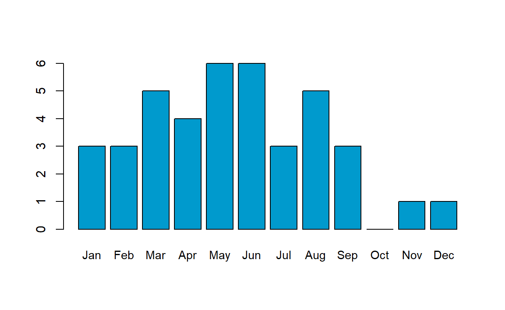

How well do my book ratings line up to the Goodreads community ratings?
2020 ended up being a uniquely good year for reading (at least for me). Multiple lockdown left me with lots of reading time and for the first time I kept track of what I read during the year.
I thought it would be interesting to share some of what I tracked by answering a couple of questions. Mainly, I want to see how my ratings compare to the average reader (for this, I used Goodreads average reviews). I don’t use the site myself, but its a great proxy for the general consensus on a book.
The questions I’d like to answer are as follows:
The below graph represents the 40 books I read in 2020. Each point relates to one book, with the horizontal axis showing the Goodreads average rating and the vertical axis showing my rating. I’ve added a line to highlight the points where my rating matches the Goodreads rating (Note: You can hover over any point to see the book it relates to).
As you can see, only 2 of 40 books had a matched rating. That said, most of the ratings were fairly close, with the majority within 0.5 of the other rating. There were a few notable exceptions, which I’ll go into more detail on below.
I was surprised to see that nearly every non-fiction book I read was rated higher on Goodreads. I have a feeling this has more to do with Goodreads ratings than to do with me (did you notice that the majority of +4 star Goodreads reviewed books are non-fiction?). Maybe I just exclusively read great non-fiction?
In the next section, we’ll look at the books with the greatest difference in ratings - starting with books I liked more than Goodreads.
| Title | Author | My.Rating | Good.Reads.Rating | Difference |
|---|---|---|---|---|
| The Memory Police | Yoko Ogawa | 4.9 | 3.8 | 1.1 |
| If Cats Disappeared From The World | Genki Kawamura | 4.4 | 3.7 | 0.7 |
| Normal People | Sally Rooney | 4.5 | 3.9 | 0.6 |
| The Color Purple | Alice Walker | 4.7 | 4.2 | 0.5 |
| Frankenstein | Mary Shelley | 4.3 | 3.8 | 0.5 |
The Memory Police: This was hands down the best book I read in 2020, so I expected this to exceed the Goodreads rating. Definitely not a book for everyone, but a good pick if you enjoy allegorical fiction.
If Cats Disappeared from the World: A short read that packs an emotional punch. It starts quite lighthearted and slowly reveals itself to you. I was quite surprised that Goodreads readers didn’t like this more.
Normal People: The best-selling novel that is now a major television series. This hit very close to home for me, not least because its set in the university I went to. Worth reading for the culture impact alone or as preparation for watching the TV show.
The Color Purple: Alice Walker’s Pulitzer prize winning novel is a classic for a reason. This moved me more than anything else I read this this year. I found it remarkably relevant to current day issues for a novel from the 1980’s.
Frankenstein: Mary Shelley’s classic had a much lower Goodreads rating than I expected. A landmark novel that is very readable for something written over 200 years ago.
| Title | Author | My.Rating | Good.Reads.Rating | Difference |
|---|---|---|---|---|
| Little Fires Everywhere | Celeste Ng | 2.4 | 4.1 | -1.7 |
| Freedom | Margaret Atwood | 2.0 | 3.4 | -1.4 |
| The Cuckoo’s Calling | Robert Galbraith | 2.6 | 3.9 | -1.3 |
| When All Is Said | Anne Griffin | 2.9 | 4.0 | -1.1 |
| Sputnik Sweetheart | Haruki Murakami | 3.0 | 3.8 | -0.8 |
Little Fires Everywhere: Another best-selling novel that is now a major television series. I think I may have had too high expectations for this. I didn’t hate this but the story just went in a direction story-wise that I didn’t enjoy.
Freedom: I didn’t realise when I bought this that it’s actual a collection of excerpts from other Atwood novels. Unfortunately, I had read most of these novels before. Not an awful book, but I’d recommend just reading her actual novels instead.
The Cuckoo’s Calling: This is the first in a series of murder mystery novels from J.K. Rowling. I found it fine as a read, if a little long. Obviously Goodreads readers enjoyed it more than I did.
When All is Said: Anne Griffin does a great job capturing life in Ireland here. I enjoyed reading this, but it was closer to a 3 than a 4 star for me.
Sputnik Sweetheart: I am a big Murakami fan. This was not my favorite of his, but it does have some beautiful description. If you’re interested in trying Murakami, I would probably start with something else (Norwegian Wood, Kafka on the Shore).
This was a fun little experiment in plotting my reading for 2020. As a bonus, I’ve included the number of books I read each month below. You can probably guess when college started based on how my reading fell off a cliff!

If you’re interested in doing something similar to this, all the graphs were created in R Markdown. The first graph utilized the Rbokeh package and the tables use the Kable extra package. This blog was compiled using the distill package and is hosted on Github pages.
Distill is a publication format for scientific and technical writing, native to the web.
Learn more about using Distill at https://rstudio.github.io/distill.